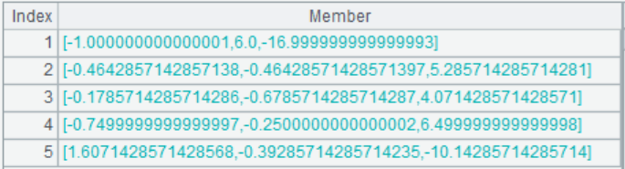

Description:
Impute missing values to a sequence type variable during modeling.
Syntax:
|
A.impute() |
During modeling, impute missing values to variable A and return a binary sequence containing the imputation result and imputation process records Rec. |
|
A.impute@r(Rec) |
During scoring, impute missing values to variable A according to imputation process records Rec. |
Note:
The MathCli external library function (See External Library Guide) imputes missing values to a sequence type variable during modeling.
Parameter:
|
A |
A sequence. |
|
Rec |
A sequence of imputation process records. |
Option:
|
@c |
Modify the original data to the imputation result after execution. |
|
@BNIED |
Each option specifies a target type, and options are mutual-exclusive; automatically judge the type when no option is used; the order of priorities of the options is binary, numeric, integer and date. |
Return value:
Sequence
Example:
|
|
A |
|
|
1 |
[1,2,3,,5,6,7,8,9,10] |
|
|
2 |
=A1.impute@N() |
Impute missing data to A1: A3(1) Return imputation result; A3(2) Imputation process records Rec. @N specifies the type of variable as numeric. |
|
3 |
=A1.impute@rc(A2(2)) |
Impute missing data to A1 according to A2��s imputation process records Rec.  |